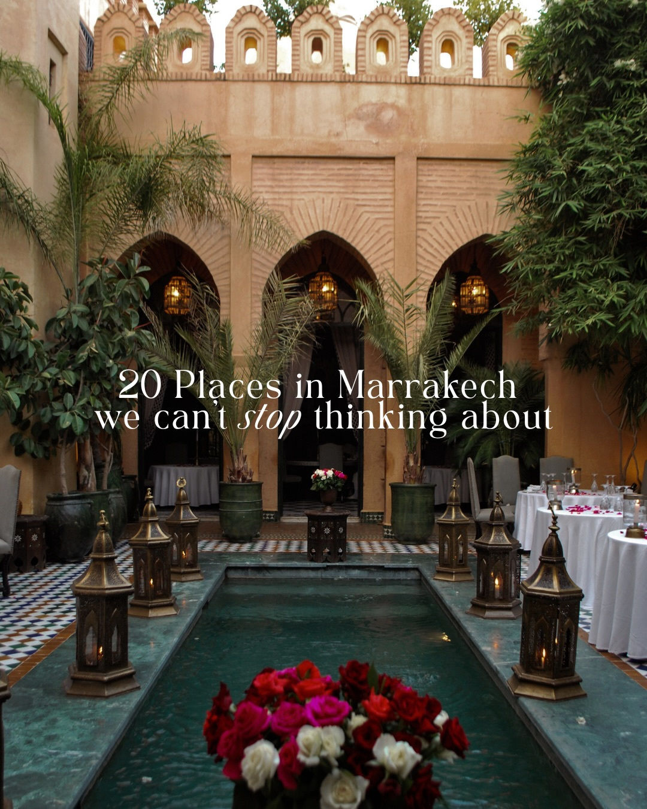
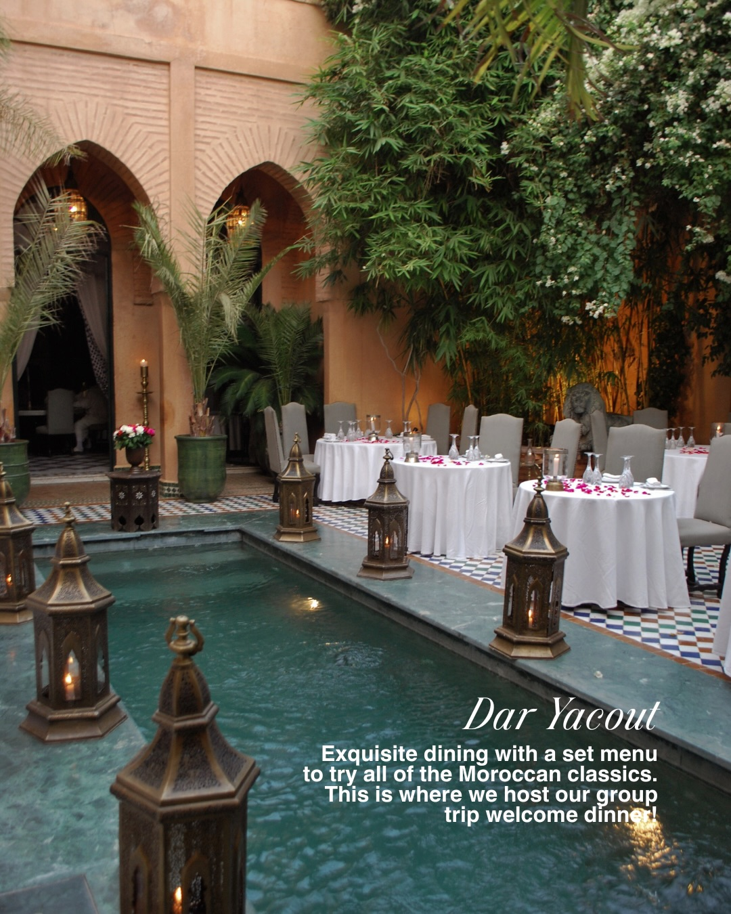
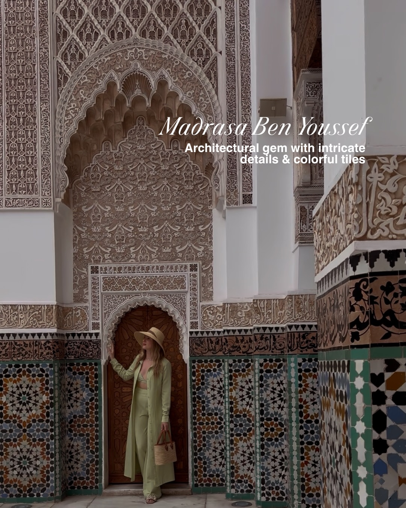
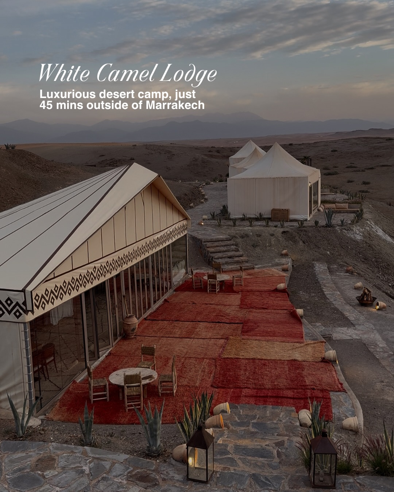
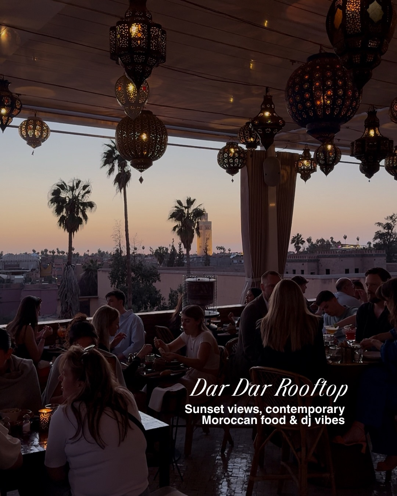
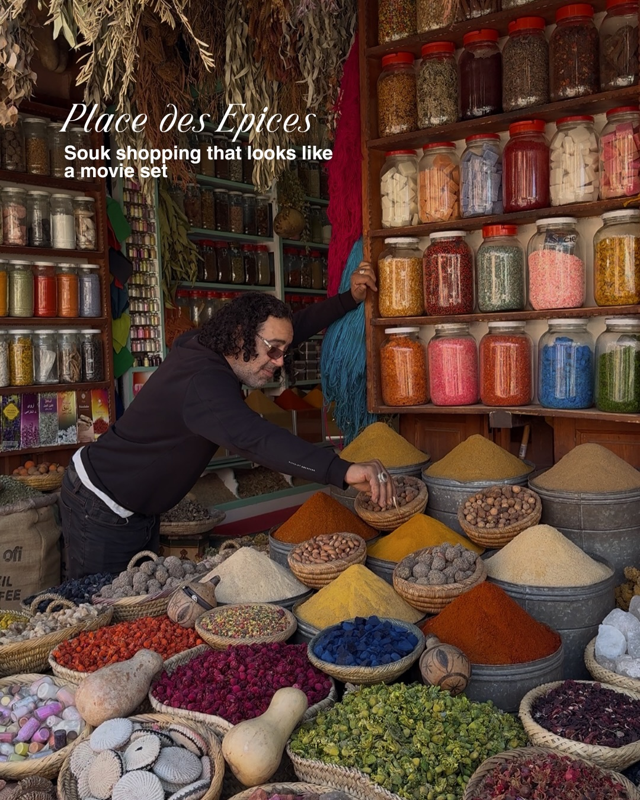
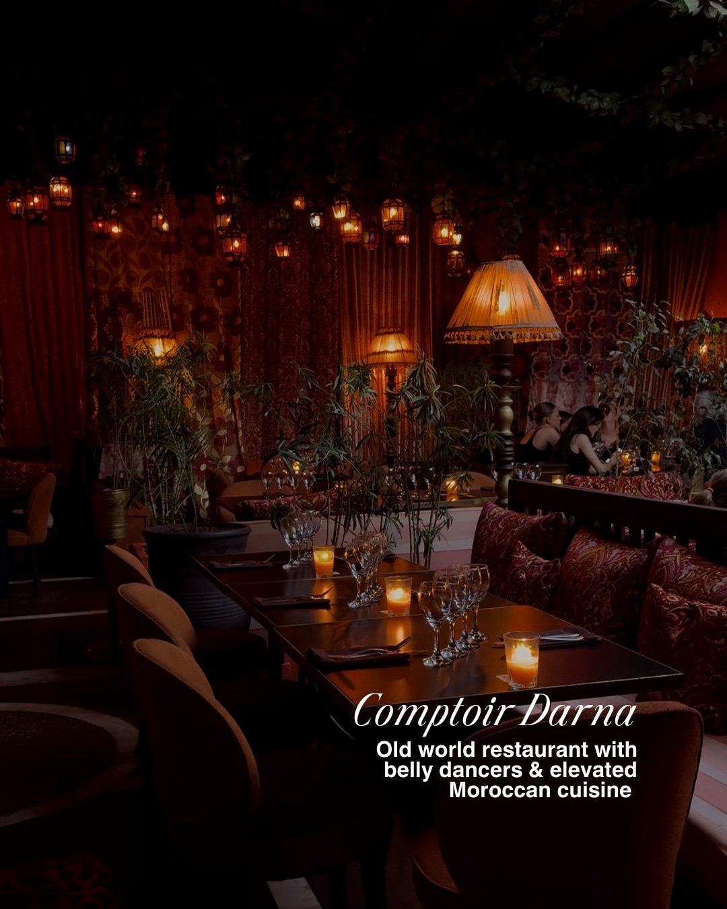
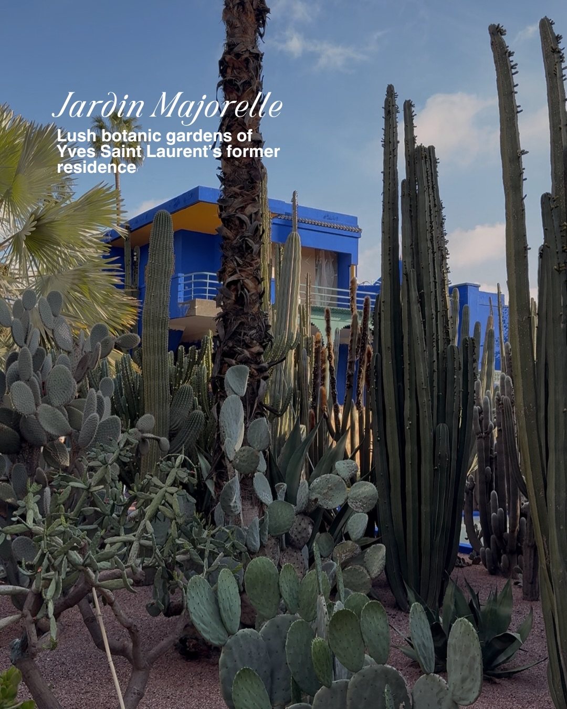
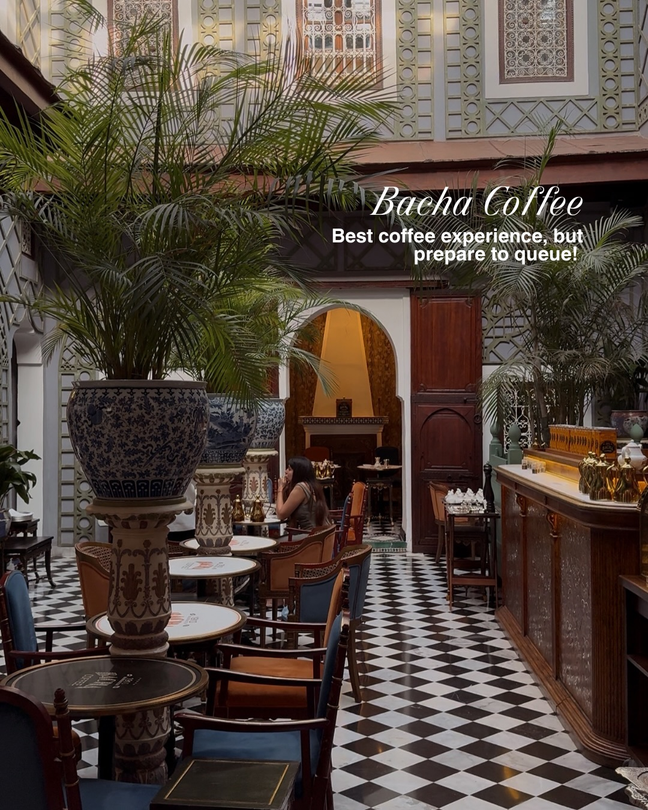

Instagram Post

Our Marrakech guide ➡️ swipe for our favorite...
carousel (10 slides) (enriched by ClaudeClaw)
Summary
20 Places in Marrakech we can't stop thinking about | Dar Yacout Exquisite dining with a set menu to try all of... | Madrasa Ben Youssef Architectural gem with intricate deta... | White Camel Lodge Luxurious desert camp, just 45 mins out... | Dar Dar Rooftop Sunset views, contemporary Moroccan food ... | Place des Epices Souk shopping that looks like a movie set | Comptoir Darna Old world resta...
Caption
Our Marrakech guide ➡️ swipe for our favorite places to eat, sleep, shop & explore! We’ll be visiting almost all of these on our Morocco women’s group trip this April 2026, comment below for our last chance to join!
#marrakech #morocco #marrakechcity #marrakechmedina #travelguide
1
20 Places in Marrakech we can't stop thinking about
A Moroccan-style courtyard features a rectangular pool with floating roses and lanterns, surrounded by arched doorways, potted plants, and dining tables.
2
Dar Yacout Exquisite dining with a set menu to try all of the Moroccan classics. This is where we host our group trip welcome dinner!
An elegant outdoor courtyard features a long, narrow pool lined with lanterns, surrounded by set dining tables, arched doorways, and lush green foliage.
3
Madrasa Ben Youssef Architectural gem with intricate details & colorful tiles
A woman in a light green outfit and a straw hat stands in an ornate arched doorway, surrounded by walls decorated with intricate carvings and colorful geometric tiles.
4
White Camel Lodge Luxurious desert camp, just 45 mins outside of Marrakech
A luxurious desert camp featuring several large white tents with glass walls, red and orange rugs, outdoor seating, and desert plants, set against a backdrop of mountains under a cloudy sky.
5
Dar Dar Rooftop Sunset views, contemporary Moroccan food & dj vibes
A rooftop restaurant at dusk, with people dining under ornate lanterns, overlooking a city skyline with palm trees and a distant tower.
6
Place des Epices Souk shopping that looks like a movie set
A man stands in a vibrant market stall filled with numerous colorful spices, dried goods, and other items displayed in jars, baskets, and metal containers.
7
Comptoir Darna Old world restaurant with belly dancers & elevated Moroccan cuisine
The image shows a dimly lit, ornate restaurant interior with Moroccan-style decor, featuring hanging lanterns, large lamps, lush greenery, and tables set with candles and glasses, with people visible in the background.
8
Jardin Majorelle Lush botanic gardens of Yves Saint Laurent's former residence
A bright blue building with yellow accents is partially visible behind a dense collection of various cacti and succulents in a sunny botanical garden.
9
Bacha Coffee Best coffee experience, but prepare to queue!
The image shows the interior of an ornate coffee shop with a black and white checkered floor, numerous tables and chairs, large potted plants, and a counter on the right.
10
Les Jardins du Lotus Pink design, nightly entertainment & delicious fusion food
A bartender stands behind a pink-tiled bar with several bar stools in a lavishly decorated interior featuring a large chandelier, ornate dark green paneling, and a mural.
All slides







